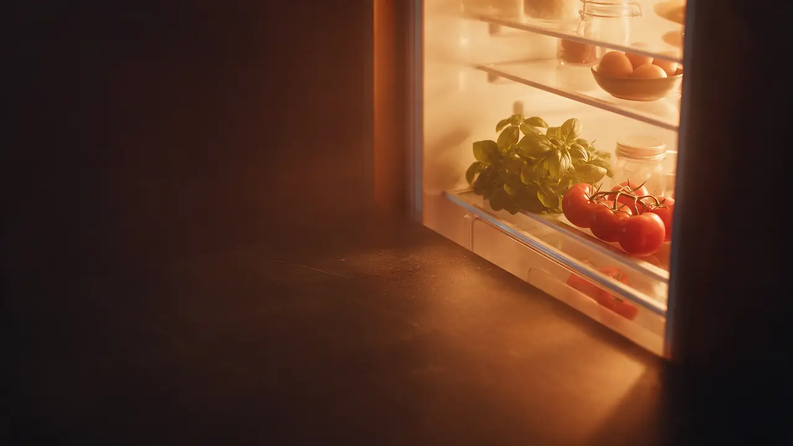
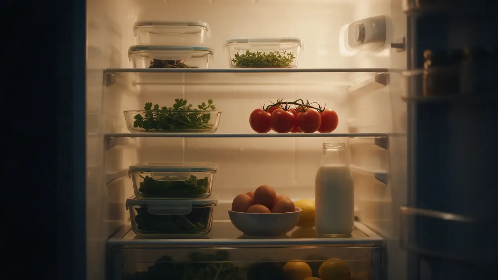
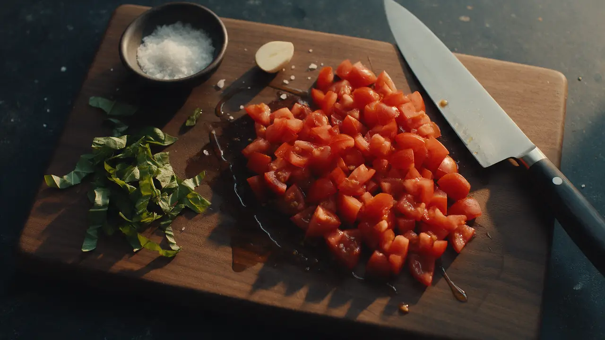
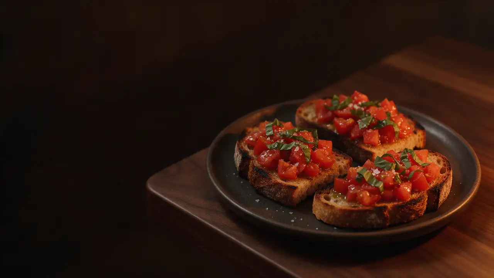
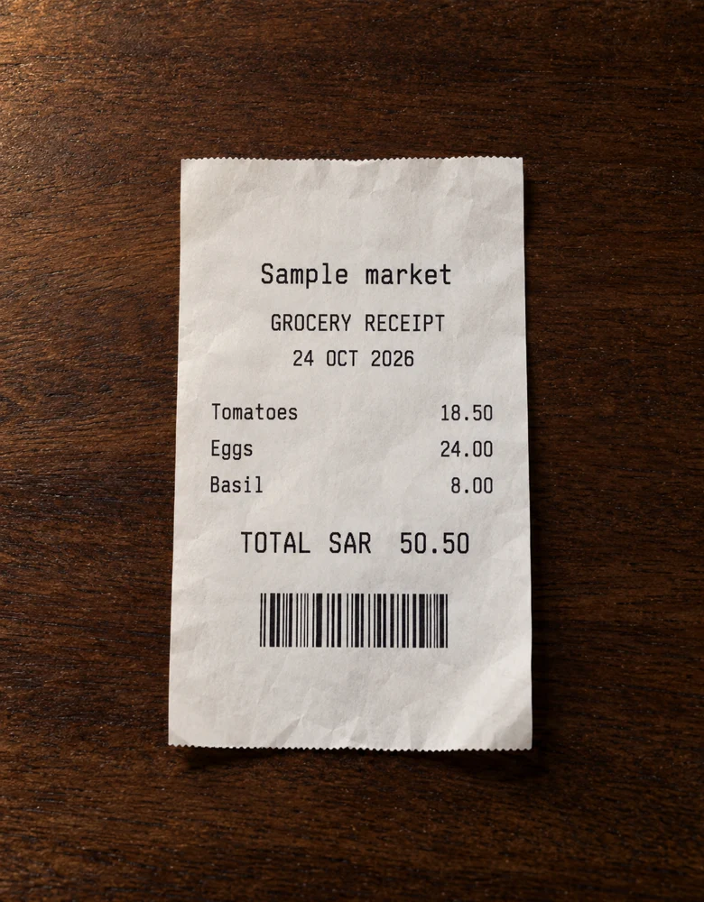
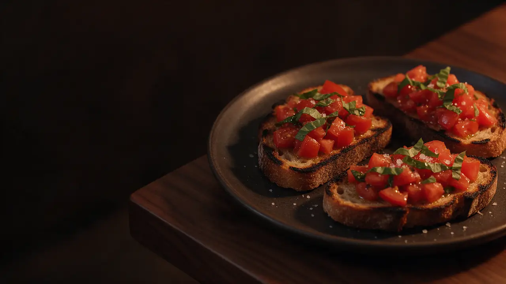

Knowing recipes is not knowing technique.
Learn turns each meal into guided practice and visible skill progress.

Pre-launch · interactive prototype
Nomli connects cooking skills, the food you own and a reason to come back tomorrow.
Three breaks · one connected response
Most tools solve one task. Nomli tests whether connecting capability, context and motivation creates a stronger everyday loop.
Learn turns each meal into guided practice and visible skill progress.
Manage keeps kitchen context available when choosing and cooking.
Play connects quests and recognition to real cooking practice.
One connected loop
Kitchen context shapes the meal. The meal becomes a lesson and quest. Completion updates skills and inventory for the next session.

Manage · inventory + scanning
Keep food, storage and equipment together. Add items manually or test camera-assisted fridge scanning, then review every result before it enters your kitchen.

Learn · recipes + Zara
Match meals to ingredients, equipment and time. Chef Zara turns each step into practical coaching as you go.
Chef Zara AI direction“Your basil goes first. Let’s turn it into dinner and practise the salt trick.”
Learn · Chef School
Start with knife setup, flavour and heat. Every lesson connects a clear idea, a quick knowledge check and a technique to try in your next meal.

Play · quests + rewards
XP, skill milestones and weekly goals turn each meal into a small win. See what you are learning, then unlock your next challenge.

Manage · receipts + expenses
Paper receipt or e-receipt, every shop stays connected. Review what you bought, update your groceries and keep your budget in view. Receipt recognition is simulated in this demo.
Later · Food Hub + family
Household coordination and cooked-dish sharing are future directions—not live social activity. Both need privacy, moderation and usefulness testing before release.
Plans · hypothesis, not checkout
No plan is billable today. Packages and prices require validation.
Starter School, personal kitchen and core daily loop.
Expanded curriculum and deeper challenges.
Advanced tools after capability validation.
Shared household tools when ready.
Packaging below is a hypothesis, not billing. Release labels match the current prototype catalog.
| Pillar | Feature | Proposed tier | Release |
|---|---|---|---|
| Learn | Chef School & skill practice | Free | Demo |
| Learn | Contextual Chef Zara | Free | Demo |
| Manage | Inventory, tools & recipes | Free | Demo |
| Manage | Receipts & grocery spending | Pro | Demo |
| Play | Quests, levels, badges & Hub | Social posting entitlement TBD | Demo |
| Learn | Personalized coaching engine | Plus | MVP planned |
| Learn | Starter lessons & skill quests | Free | MVP planned |
| Manage | Barcode & expiry review | Free | MVP planned |
| Play | Daily quests & basic feed | Social posting entitlement TBD | MVP planned |
| Learn | Full novice-to-advanced school | Plus | Later planned |
| Learn | Voice & multilingual coaching | Pro | Later planned |
| Manage | Produce recognition & receipt OCR | Pro | Later planned |
| Manage | Shared family kitchen | Family | Later planned |
| Manage | Meal & dietary planning | Family | Later planned |
| Manage | Offline recipe library | Pro | Later planned |
| Manage | Spending localization | Pro | Later planned |
| Play | Community & family quests | Social posting entitlement TBD | Later planned |
| Play | Custom challenges & mentor tools | Pro | Later planned |
| Account | Sign-in, consent & privacy | All tiers | MVP planned |
| Commercial | Subscription checkout | Paid tiers | Later planned |
| Manage | Grocery ordering integrations | TBD | Exploratory |
| Learn | Certificates & verified mastery | TBD | Exploratory |
| Play | Photo authenticity checks | TBD | Exploratory |
Current price hypotheses: Free $0 · Plus $5.99/month · Pro $12.99/month · Family $19.99/month. Tier assignments require validation.
Roadmap
Sequence reflects product risk, not committed delivery dates.
Three-pillar sample with fixed data and simulated behavior.
Starter lessons, editable inventory, guided recipes, quests, progress and safety controls.
Curriculum, household tools, validated community and billing for available value.
Vision, receipt automation, voice coaching and advanced social workflows.
Can cooks understand all pillars and finish the core path unaided?
Do they return, complete a lesson and maintain their kitchen?
Which completed capabilities create credible payment intent?
Unvalidated stretch scenario: 500K MAU × 8% paid = 40K payers. $3M ARR then requires $6.25 monthly revenue per payer. A 40% Day-30 retention target is also an aspiration. None represents traction or a forecast.
Product landscape
Its official product page describes recipe saving, meal planning, grocery lists and recipe communities.
Official product overview ↗Its official app page describes serving conversions, step-by-step cooking, instructional videos and expert tips.
Official app overview ↗Our proposed focus connects guided skill milestones, reviewed stock and receipt spending, and quests in one daily loop. Its value and demand remain to be tested.
Selected public capabilities, reviewed 24 October 2026. This is a positioning comparison, not an exhaustive feature assessment or a claim of exclusivity.
What funding enables
Today: a built, interactive three-pillar prototype using fixed data and simulated behavior.
Funding would enable an MVP around Learn, Manage and Play; evaluated coaching and recognition with safety controls; and a controlled pilot measured through the 90-day gates.

Prototype built · premise ready to test
Interactive sample · simulated behavior · no traction claimed